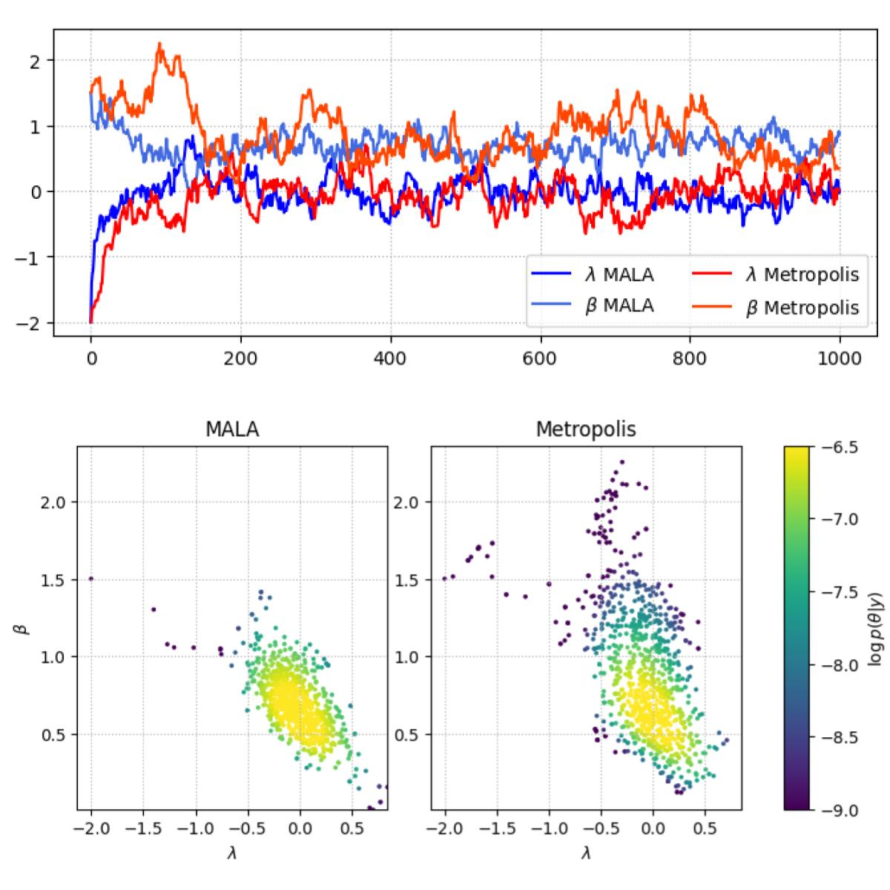

Open-source tools developed alongside my research. All repositories are open-source-licensed — issues and pull requests welcome. See Publications for links to scripts and data used to produce publication data and figures.

Python & pytorch code for vanilla Gaussian Process modelling, using automatic differentiation for efficient MCMC sampling and torch-based GPU acceleration
View repository →Python code for computing shallow ice approximation depth-resolved flow speeds and timestepping through the continuity equation. Simple code intended for teaching and sharing
View repository →Python one-dimensional, transient subglacial outburst flood model based on Clarke (2003, J. Glaciol.) and Spring & Hutter (1981, Cold Regions Science and Technology)
View repository →Matlab two-dimensional finite-volume model for bare-ice supraglacial hydrology, described in Hill & Dow (2021)
View repository →Matlab-based surface energy balance (SEB) glacier melt model, described in Hill et al. (2021)
View repository →Looking for something specific, or want to collaborate on a tool? Get in touch.